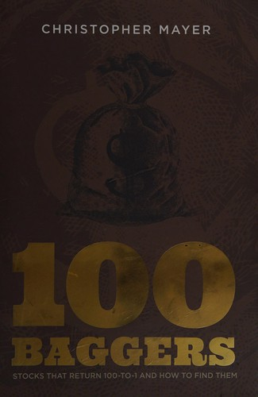

1994年到2004年，克里斯托弗·迈尔（Christopher Mayer）在马里兰一家银行做企业信贷员，专门审读公司财报、评估贷款申请。2004年他转行做投资写作，加入阿哥拉金融（Agora Financial）旗下的通讯《Capital & Crisis》，一做就是主编十一年，直到2015年。此后他先加入邦纳家族的邦纳合伙公司（Bonner & Partners），2019年1月又自立门户，创办伍德洛克宅邸家族资本（Woodlock House Family Capital），管理集中持仓的长线股票组合至今。迈尔本科在马里兰大学以优异成绩读金融，后在同校拿到MBA。《100 Baggers: Stocks That Return 100-to-1 and How to Find Them》于2015年9月由Laissez Faire Books在巴尔的摩出版，全书两百一十页。
书的骨架是一份统计：迈尔和团队筛出1962年至2014年间美国股市里365只涨了100倍以上的股票，逐一拆解它们的共同特征。他把百倍回报拆成两台"引擎"——盈利本身的持续增长，加上市场愿意为这份盈利支付的估值倍数（市盈率）同步抬升，二者叠加缺一不可。研究期内累计涨幅最大的是伯克希尔·哈撒韦，用十九年时间涨满百倍，但期间股价至少腰斩过三次——迈尔用这只股票提醒读者，百倍股的持有过程从来不是一条平滑的曲线。书中反复出现的另一个词是"咖啡罐组合"（coffee can portfolio），借自罗伯特·柯比（Robert Kirby）1984年发表在《投资组合管理期刊》上的一篇文章：柯比曾为一对夫妇管理账户近十年，丈夫每次听到柯比的买入建议就自掏五千美元买入，却从不理会卖出建议，买完就把股票凭证扔进保险箱锁起来。丈夫去世后柯比清点遗产才发现，其中一笔哈洛伊德（Haloid，后来的施乐）的持仓已经涨到八十万美元，单这一笔就超过了这对夫妇账户的全部本金。迈尔以此论证：找到好公司之后，最难也最关键的动作是什么都不做。书中具体拆解的案例包括：怪兽饮料（Monster Beverage）——靠不生产只做营销和包装设计的轻资产模式，2003年到2012年间以约47%的年复合增速冲上百倍，到2014年底累计涨幅已超过七百倍；加拿大连锁餐饮公司MTY Food Group；以及亚马逊、艺电（Electronic Arts）、康卡斯特、百事、吉列等公司各自的百倍股历程。
《100 Baggers》并非凭空而来。1972年，证券分析师托马斯·菲尔普斯（Thomas W. Phelps）出版了《100 to 1 in the Stock Market》，统计了1932年到1971年间美国股市中同样涨了百倍的股票，这本书如今是投资圈的冷门经典，也是《100 Baggers》在研究方法乃至书名上的直接源头。迈尔多次公开提到，正是重读菲尔普斯这本旧书，促使他把研究窗口延伸到1962至2014年，重新做一遍同样的统计。两本书讨论的是同一个问题在不同年代的答案，各自独立成书，不宜混为一谈。《100 Baggers》目前有繁体中文版《尋找百倍股：這才是穩賺的本事，每個投資人畢生追尋的獲利寶典》，由李靜怡翻译、大牌出版发行，此后又推出"經典紀念版"。
迈尔在书里反复强调的一条筛选标准，是寻找把大量个人身家押在公司里的所有者型经营者（owner-operator）——他引用乔尔·舒尔曼（Joel Shulman）与埃里克·诺伊斯（Erik Noyes）2012年的一项研究：由白手起家的亿万富豪掌舵的上市公司，长期跑赢指数约7个百分点。对习惯短线交易、频繁调仓的投资者，这本书给出的不是一套选股公式，而是一份关于"耐心成本"的账单——书中列出的365个案例里，多数公司走完百倍旅程用了二十年上下，中途经历至少一次腰斩的比比皆是。它提醒管理者和投资者：真正决定回报上限的，往往不是买入那一刻的判断力，而是漫长持有期里按兵不动的克制力。